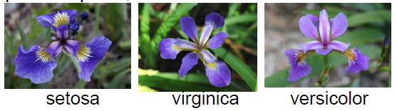
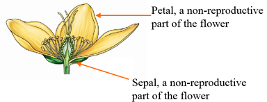
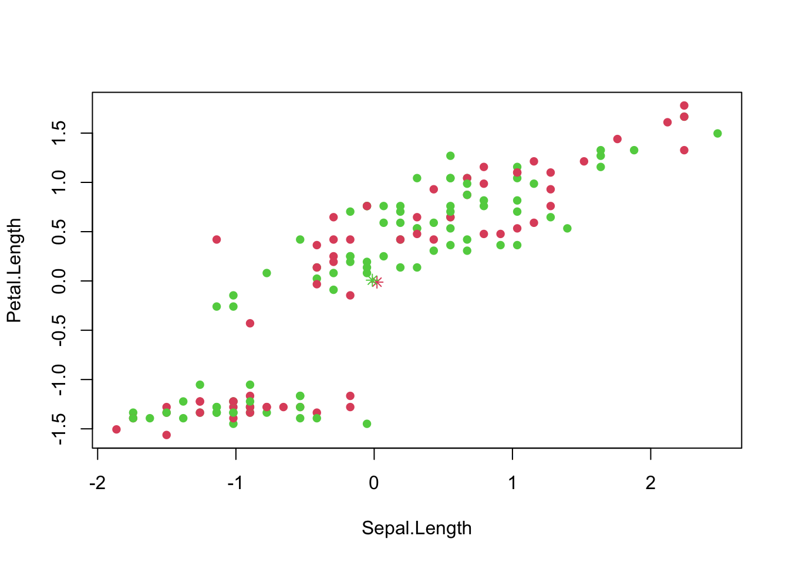
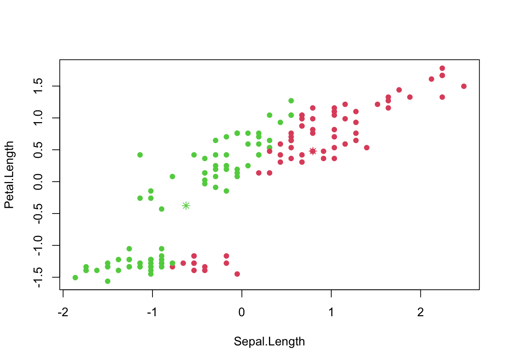
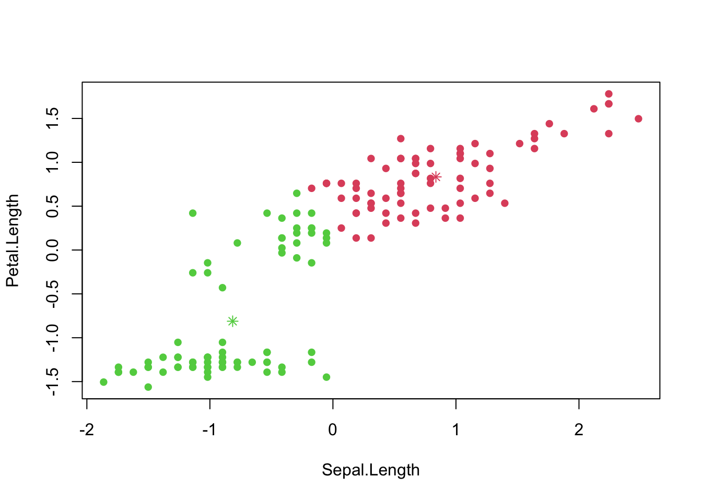

Examples of Data Mining Algorithms
Examples of supervised data mining
- In supervised data mining, the target variable is identified
- The goal is to predict or explain certain outcome
- Common applications:
- prediction models
- classification models
Prediction model: response variable is numerical
- Regression method
- e.g., stock return,
- housing price,
- temperature,
- spending of a customer.
Ask Educate Us GPT
Give me two real-world business applications using the prediction models.
Example: Predicting median house value using Boston Housing Data
We use Boston Housing Data as an illustrative example in this lab. Boston housing data is a built-in dataset in MASS package, so you do not need to download externally. Package MASS comes with R when you installed R, so no need to use install.packages(MASS) to download and install, but you do need to load this package.
Load Data
library(MASS)
data(Boston); #this data is in MASS package
colnames(Boston) [1] "crim" "zn" "indus" "chas" "nox" "rm" "age"
[8] "dis" "rad" "tax" "ptratio" "black" "lstat" "medv" You can find details of the dataset from help document.
?BostonThe original data are 506 observations on 14 variables, medv being the response variable \(y\):
EDA
We have introduced many EDA techniques before. We will only briefly go through some of them here.
dim(Boston) [1] 506 14names(Boston) [1] "crim" "zn" "indus" "chas" "nox" "rm" "age"
[8] "dis" "rad" "tax" "ptratio" "black" "lstat" "medv" str(Boston)'data.frame': 506 obs. of 14 variables:
$ crim : num 0.00632 0.02731 0.02729 0.03237 0.06905 ...
$ zn : num 18 0 0 0 0 0 12.5 12.5 12.5 12.5 ...
$ indus : num 2.31 7.07 7.07 2.18 2.18 2.18 7.87 7.87 7.87 7.87 ...
$ chas : int 0 0 0 0 0 0 0 0 0 0 ...
$ nox : num 0.538 0.469 0.469 0.458 0.458 0.458 0.524 0.524 0.524 0.524 ...
$ rm : num 6.58 6.42 7.18 7 7.15 ...
$ age : num 65.2 78.9 61.1 45.8 54.2 58.7 66.6 96.1 100 85.9 ...
$ dis : num 4.09 4.97 4.97 6.06 6.06 ...
$ rad : int 1 2 2 3 3 3 5 5 5 5 ...
$ tax : num 296 242 242 222 222 222 311 311 311 311 ...
$ ptratio: num 15.3 17.8 17.8 18.7 18.7 18.7 15.2 15.2 15.2 15.2 ...
$ black : num 397 397 393 395 397 ...
$ lstat : num 4.98 9.14 4.03 2.94 5.33 ...
$ medv : num 24 21.6 34.7 33.4 36.2 28.7 22.9 27.1 16.5 18.9 ...summary(Boston) crim zn indus chas
Min. : 0.00632 Min. : 0.00 Min. : 0.46 Min. :0.00000
1st Qu.: 0.08205 1st Qu.: 0.00 1st Qu.: 5.19 1st Qu.:0.00000
Median : 0.25651 Median : 0.00 Median : 9.69 Median :0.00000
Mean : 3.61352 Mean : 11.36 Mean :11.14 Mean :0.06917
3rd Qu.: 3.67708 3rd Qu.: 12.50 3rd Qu.:18.10 3rd Qu.:0.00000
Max. :88.97620 Max. :100.00 Max. :27.74 Max. :1.00000
nox rm age dis
Min. :0.3850 Min. :3.561 Min. : 2.90 Min. : 1.130
1st Qu.:0.4490 1st Qu.:5.886 1st Qu.: 45.02 1st Qu.: 2.100
Median :0.5380 Median :6.208 Median : 77.50 Median : 3.207
Mean :0.5547 Mean :6.285 Mean : 68.57 Mean : 3.795
3rd Qu.:0.6240 3rd Qu.:6.623 3rd Qu.: 94.08 3rd Qu.: 5.188
Max. :0.8710 Max. :8.780 Max. :100.00 Max. :12.127
rad tax ptratio black
Min. : 1.000 Min. :187.0 Min. :12.60 Min. : 0.32
1st Qu.: 4.000 1st Qu.:279.0 1st Qu.:17.40 1st Qu.:375.38
Median : 5.000 Median :330.0 Median :19.05 Median :391.44
Mean : 9.549 Mean :408.2 Mean :18.46 Mean :356.67
3rd Qu.:24.000 3rd Qu.:666.0 3rd Qu.:20.20 3rd Qu.:396.23
Max. :24.000 Max. :711.0 Max. :22.00 Max. :396.90
lstat medv
Min. : 1.73 Min. : 5.00
1st Qu.: 6.95 1st Qu.:17.02
Median :11.36 Median :21.20
Mean :12.65 Mean :22.53
3rd Qu.:16.95 3rd Qu.:25.00
Max. :37.97 Max. :50.00 We skip the Exploratory Data Analysis (EDA) in this notes, but you should not omit it in your real world cases. EDA is very important and always the first analysis to do before any modeling. You should also provide some visualization to present some exploratory analysis.
Ask Educate Us GPT
Give me the sample codes in R to do the exploratory analysis for the "Boston" dataset
Splitting data to training and testing samples
Next we sample 90% of the original data and use it as the training set. The remaining 10% is used as test set. The regression model will be built on the training set and future performance of your model will be evaluated with the test set.
sample_index <- sample(nrow(Boston),nrow(Boston)*0.90)
Boston_train <- Boston[sample_index,]
Boston_test <- Boston[-sample_index,](Optional) Standardization
If we want our results to be invariant to the units and the parameter estimates \(\beta_i\) to be comparable, we can standardize the variables. Essentially we are replacing the original values with their z-score.
1st Way: create new variables manually.
Boston$sd.crim <- (Boston$crim-mean(Boston$crim))/sd(Boston$crim); This does the same thing.
Boston$sd.crim <- scale(Boston$crim); Model Building
You task is to build a best model with training data. You can refer to the regression and variable selection code on the slides for more detailed description of linear regression.
The following model includes all \(x\) variables in the dataeset
model_1 <- lm(medv~crim+zn+chas+nox+rm+dis+rad+tax+ptratio+black+lstat, data=Boston_train)To include all variables in the model, you can write the statement this simpler way.
model_1 <- lm(medv~., data=Boston_train)
summary(model_1)
Call:
lm(formula = medv ~ ., data = Boston_train)
Residuals:
Min 1Q Median 3Q Max
-15.631 -2.781 -0.483 1.891 25.683
Coefficients:
Estimate Std. Error t value Pr(>|t|)
(Intercept) 37.569472 5.476946 6.860 2.35e-11 ***
crim -0.113152 0.033529 -3.375 0.000804 ***
zn 0.046690 0.014222 3.283 0.001109 **
indus -0.004958 0.065223 -0.076 0.939437
chas 2.616568 0.922146 2.837 0.004757 **
nox -17.411266 4.074397 -4.273 2.36e-05 ***
rm 3.694086 0.437746 8.439 4.64e-16 ***
age -0.003041 0.014111 -0.216 0.829445
dis -1.561798 0.214412 -7.284 1.50e-12 ***
rad 0.320362 0.070308 4.557 6.74e-06 ***
tax -0.012681 0.003909 -3.244 0.001267 **
ptratio -0.899432 0.140336 -6.409 3.77e-10 ***
black 0.008277 0.002839 2.915 0.003732 **
lstat -0.545811 0.053865 -10.133 < 2e-16 ***
---
Signif. codes: 0 '***' 0.001 '**' 0.01 '*' 0.05 '.' 0.1 ' ' 1
Residual standard error: 4.802 on 441 degrees of freedom
Multiple R-squared: 0.7418, Adjusted R-squared: 0.7342
F-statistic: 97.47 on 13 and 441 DF, p-value: < 2.2e-16But, is this the model you want to use?
(Optional) Interaction terms in model
If you suspect the effect of one predictor x1 on the response y depends on the value of another predictor x2, you can add interaction terms in model. To specify interaction in the model, you put : between two variables with interaction effect. For example
lm(medv~crim+zn+crim:zn, data=Boston_train)
#The following way automatically add the main effects of crim and zn
lm(medv~crim*zn, data=Boston_train)For now we will not investigate the interactions of variables. But you can try to do these analyses with the help of EducateUsBot.
Ask Educate Us GPT
Show me sample codes in R to add interaction terms between age and rm to a linear regression model for the "Boston" dataset.
Model Assessment
Suppose that everything in model diagnostics is okay. In other words, the model we have built is fairly a valid model. Then we need to evaluate the model performance in terms of different metrics.
Commonly used metrics include MSE, (adjusted) \(R^2\), AIC, BIC for in-sample performance, and MSPE for out-of-sample performance.
In-sample model evaluation (train error)
MSE of the regression, which is the square of ‘Residual standard error’ in the above summary. It is the sum of squared residuals(SSE) divided by degrees of freedom (n-p-1). In some textbooks the sum of squred residuals(SSE) is called residual sum of squares(RSS). MSE of the regression should be the unbiased estimator for variance of \(\epsilon\), the error term in the regression model.
model_summary <- summary(model_1)
(model_summary$sigma)^2[1] 23.06345\(R^2\) of the model
model_summary$r.squared[1] 0.7418213Adjusted-\(R^2\) of the model, if you add a variable (or several in a group), SSE will decrease, \(R^2\) will increase, but Adjusted-\(R^2\) could go either way.
model_summary$adj.r.squared[1] 0.7342106AIC and BIC of the model, these are information criteria. Smaller values indicate better fit.
AIC(model_1)[1] 2734.917BIC(model_1)[1] 2796.722BIC, AIC, and Adjusted \(R^2\) have complexity penalty in the definition, thus when comparing across different models they are better indicators on how well the model will perform on future data.
Out-of-sample prediction (test error)
To evaluate how the model performs on future data, we use predict() to get the predicted values from the test set.
#medv_pred is a vector that contains predicted values for test set.
medv_pred <- predict(object = model_1, newdata = Boston_test)Just as any other function, you can write the above statement the following way as long as the arguments are in the right order.
medv_pred <- predict(model_1, Boston_test)The most common measure is the Mean Squared Prediction Error (MSPE): average of the squared differences between the predicted and actual values
mean((medv_pred - Boston_test$medv)^2)[1] 18.33824A less popular measure is the Mean Absolute Prediction Error (MAPE). You can probably guess that here instead of taking the average of squared error, MAE is the average of absolute value of error.
mean(abs(medv_pred - Boston_test$medv))[1] 3.419211Note that if you ignore the second argument of predict(), it gives you the in-sample prediction on the training set:
predict(model_1)Which is the same as
model_1$fitted.valuesClassification model: response variable is categorical
- generalized linear regression, CART, gradient boosting, neural network, deep learning
- example: problems that has response as {A, B, C}, {dog, cat}, {0, 1}.
- logistic regression model can do the classification.
Example: Predicting binary purchase action using Purchase dataset
Suppose we need predict whether a customer will purchase a product based on factors like their age, gender, browsing history, and the time of day they visit the website.
Splitting the data into training and testing sets
library(readr)
Purchase <- read_csv("examples/Purchase.csv")
# View(Purchase)
sample_index <- sample(nrow(Purchase),nrow(Purchase)*0.80)
train <- Purchase[sample_index,]
test <- Purchase[-sample_index,]Fitting a logistic regression model
The estimated coefficient of a logistic model does not allow us to determine the partial effect of a predictor variable on the probability. It is preferable to interpret logistic regression coefficients in terms of odds rather than probabilities. Odds are defined as the ratio of the probability of success and the probability of failure.
Let \(p = p(y = 1)\), between \([0,1]\).
Odds = \(\frac{p}{1-p}\), between 0 and infinity.
After fitted, the odds(logit) can be expressed as \(\frac{\hat{p}}{(1-\hat{p})}= \exp(b_0 + b_1 x_1)\).
- The natural log of the odds (logit) is a linear function. \(\log{odds}= b_0 + b_1 x_1\)
- So the \(b_1\times 100\) is is the approximate percentage change in the odds when the predictor variable increases by one unit.
# Fitting a logistic regression model
model <-
glm(Purchase ~ Age + Browsing_History +
Gender + Time_Of_Day,
data=train,
family='binomial')
summary(model)
Call:
glm(formula = Purchase ~ Age + Browsing_History + Gender + Time_Of_Day,
family = "binomial", data = train)
Coefficients:
Estimate Std. Error z value Pr(>|z|)
(Intercept) -2.225200 0.334636 -6.650 2.94e-11 ***
Age 0.039292 0.006793 5.784 7.28e-09 ***
Browsing_History 1.975302 0.168956 11.691 < 2e-16 ***
GenderMale -0.014316 0.161714 -0.089 0.929
Time_Of_DayEvening 0.309500 0.200457 1.544 0.123
Time_Of_DayMorning -0.209680 0.193539 -1.083 0.279
---
Signif. codes: 0 '***' 0.001 '**' 0.01 '*' 0.05 '.' 0.1 ' ' 1
(Dispersion parameter for binomial family taken to be 1)
Null deviance: 1100.2 on 799 degrees of freedom
Residual deviance: 909.3 on 794 degrees of freedom
AIC: 921.3
Number of Fisher Scoring iterations: 4Making predictions
train_pred <- predict(model, newdata=train, type='response')
test_pred <- predict(model, newdata=test, type='response')What about purchase probability of a female, 35-year-old customer who has browsed the product in the evening?
Evaluating the model
Ask Educate Us GPT
How should I evaluate a logistic regression model?
# Evaluating the accuracy
train_accuracy <- mean((train_pred > 0.5) == train$Purchase)
print(paste('Train_Accuracy:', train_accuracy))[1] "Train_Accuracy: 0.7125"test_accuracy <- mean((test_pred > 0.5) == test$Purchase)
print(paste('Test_Accuracy:', test_accuracy))[1] "Test_Accuracy: 0.695"# Calculating AUC for training and testing sets
library(pROC)
train_auc <- roc(train$Purchase, train_pred)
test_auc <- roc(test$Purchase, test_pred)Example of unsupervised data mining
Clustering
K-Means Clustering: This is a popular clustering algorithm that partitions data into k clusters based on the mean distance between data points and cluster centers. It aims to minimize the intra-cluster variance and is efficient for large datasets.
Example: Clustering Iris flowers in Iris dataset
Let’s first load the Iris dataset. This is a very famous dataset in almost all data mining, machine learning courses, and it has been an R build-in dataset. The dataset consists of 50 samples from each of three species of Iris flowers (Iris setosa, Iris virginicaand Iris versicolor). Four features(variables) were measured from each sample, they are the length and the width of sepal and petal, in centimeters. It is introduced by Sir Ronald Fisher in 1936 with 3 Iris Species.

- Four features of flower: length and the width of sepal and petal

The iris flower data set is included in R. It is a data frame with 150 cases (rows) and 5 variables (columns) named Sepal.Length, Sepal.Width, Petal.Length, Petal.Width, and Species.
Ask Educate Us GPT
Why do we apply clustering analysis to the Iris dataset?
First, load iris data to the current workspace. This is a random grouping (first step).
data("iris")
# Scale the Iris dataset columns (excluding columns 2, 4, and 5)
iris1 <- scale(iris[,-c(2,4,5)])
# Get the number of rows in the scaled dataset
n <- nrow(iris1)
# Create a random index sample for splitting the dataset
index <- sample(2, n, replace = TRUE)
# Create two subsets based on the random index
iris.sub1 <- iris1[index == 1,]
iris.sub2 <- iris1[index == 2,]
# Calculate the mean of each column in the subsets
mean.sub1 <- apply(iris.sub1, 2, mean)
mean.sub2 <- apply(iris.sub2, 2, mean)
# Plot the scaled Iris dataset with different colors based on the subset index
plot(iris1, col = index + 1, pch = 16)
# Plot the mean of each subset as points in different colors
points(x = mean.sub1[1], y = mean.sub1[2], col = 2, pch = 8)
points(x = mean.sub2[1], y = mean.sub2[2], col = 3, pch = 8)
The next step
# Define a function 'Eudist' to calculate Euclidean distance between two vectors
Eudist <- function(x, y) sqrt(sum((x - y)^2))
# Calculate Euclidean distance between mean.sub1 and each row in iris1
d1 <- sapply(1:n, function(i) Eudist(mean.sub1, iris1[i,]))
# Calculate Euclidean distance between mean.sub2 and each row in iris1
d2 <- sapply(1:n, function(i) Eudist(mean.sub2, iris1[i,]))
# Determine the index of the minimum distance for each row to assign to a new index
index.new <- apply(cbind(d1, d2), 1, which.min)
# Create new subsets 'iris.sub1' and 'iris.sub2' based on the new index
iris.sub1 <- iris1[index.new == 1,]
iris.sub2 <- iris1[index.new == 2,]
# Calculate the mean of each column in the new subsets
mean.sub1 <- apply(iris.sub1, 2, mean)
mean.sub2 <- apply(iris.sub2, 2, mean)
# Create a scatter plot of iris1 with points colored based on the new index
plot(iris1, col = index.new + 1, pch = 16)
# Plot the mean of each new subset as points in different colors on the scatter plot
points(x = mean.sub1[1], y = mean.sub1[2], col = 2, pch = 8)
points(x = mean.sub2[1], y = mean.sub2[2], col = 3, pch = 8)
# Calculate the Euclidean distance between 'mean.sub1' and each row in 'iris1' and store in 'd1'
d1 <- sapply(1:n, function(i) Eudist(mean.sub1, iris1[i,]))
# Calculate the Euclidean distance between 'mean.sub2' and each row in 'iris1' and store in 'd2'
d2 <- sapply(1:n, function(i) Eudist(mean.sub2, iris1[i,]))
# Determine the index of the minimum distance between 'd1' and 'd2' for each row and assign to 'index.new'
index.new <- apply(cbind(d1, d2), 1, which.min)
# Create new subsets 'iris.sub1' and 'iris.sub2' based on 'index.new'
iris.sub1 <- iris1[index.new == 1,]
iris.sub2 <- iris1[index.new == 2,]
# Calculate the mean of each column in the new subsets
mean.sub1 <- apply(iris.sub1, 2, mean)
mean.sub2 <- apply(iris.sub2, 2, mean)
# Create a scatter plot of 'iris1' with points colored based on 'index.new'
plot(iris1, col = index.new + 1, pch = 16)
# Plot the mean of 'iris.sub1' as points in color 2 on the scatter plot
points(x = mean.sub1[1], y = mean.sub1[2], col = 2, pch = 8)
# Plot the mean of 'iris.sub2' as points in color 3 on the scatter plot
points(x = mean.sub2[1], y = mean.sub2[2], col = 3, pch = 8)